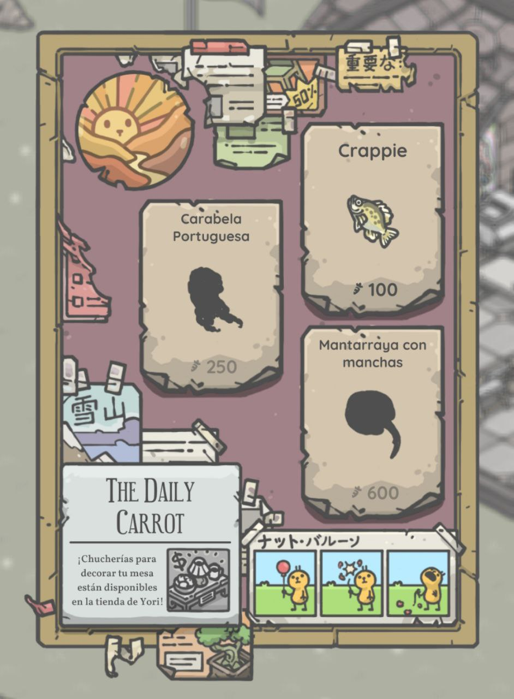

Consejo 1: No vender todos los peces porque si te dejas 3 cuando hayan en el tablero vas a ver que te dejan mas dinero :D

Consejo 2: En el ayuntamiento en el buzon se anjean los codigos de las zanahorias.

Consejo 3: Una vez que maduren las Calavazas no dejar pasar una hora porque, pasada esa hora se pudren :(
Consejo 4: Una vez pescado los 18 o 20 peces maximo y te sale la primera basura, tenes que esperar 2Horas 6Min para que vuelvan los peces.
Consejo 5: Llegando al dia 12 o 10 cuando aparecen los descuentos en la tienda de Yori, comprar todo lo que se pueda vender para luego venderselas a Yori al precio original y conseguis mas zanahorias
Consejo 6: Aprende de tus errores.